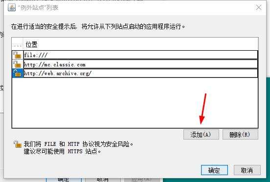
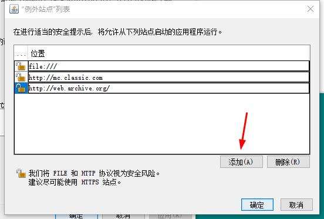

Minecraft 旧版
Applet教程
这是对于IE的教程
1. 先去Java.com下载32位的Java8。去官网
2.安装Java8完成之后，设置Java，用WIN+R输入javacpl然后运行，在安全选项将本网站（如果你是离线玩Minecraft Classic，请将"file:///"设为例外站点）设为例外站点，并且把安全等级设为高
 

3.*请打开IE设置，找到安全选项卡，点击自定义级别，找到Java小程序脚本，设为启用，点击确定即可。如果你想关闭Java小程序被IE阻止而不是Java安全阻止的话，请找到高级选项卡，不勾选禁用脚本调试（ie和其他的全部取消勾选），然后再找到“允许活动内容在‘我的电脑’的文件运行”，勾选他就不会被IE阻止。
4.如果浏览器有IE兼容模式，请打开IE兼容模式运行网页，否则Java小程序不启动。
（带*的是指可选操作）